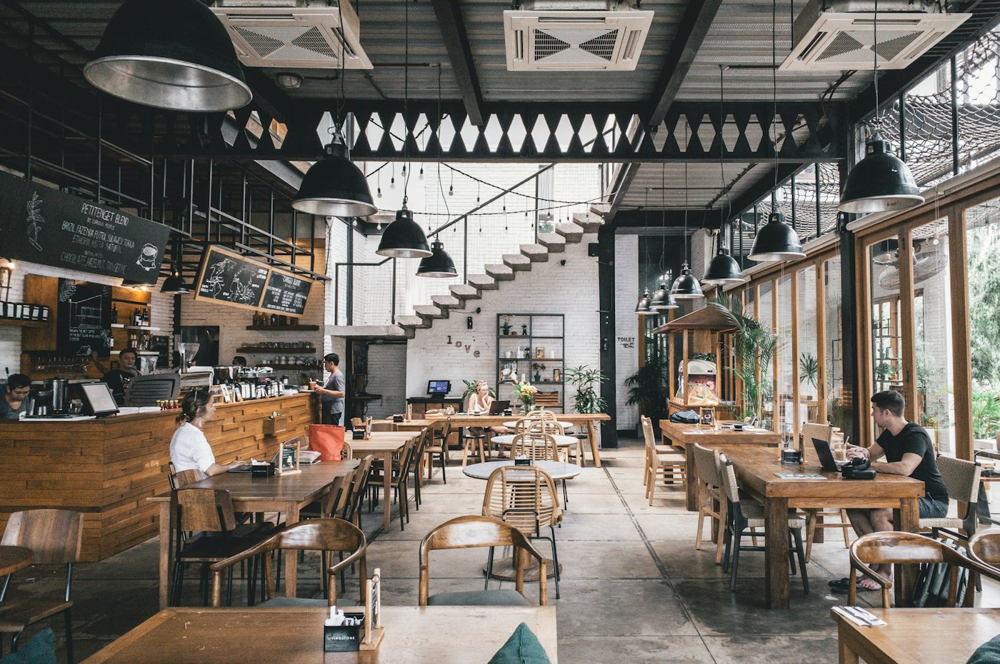
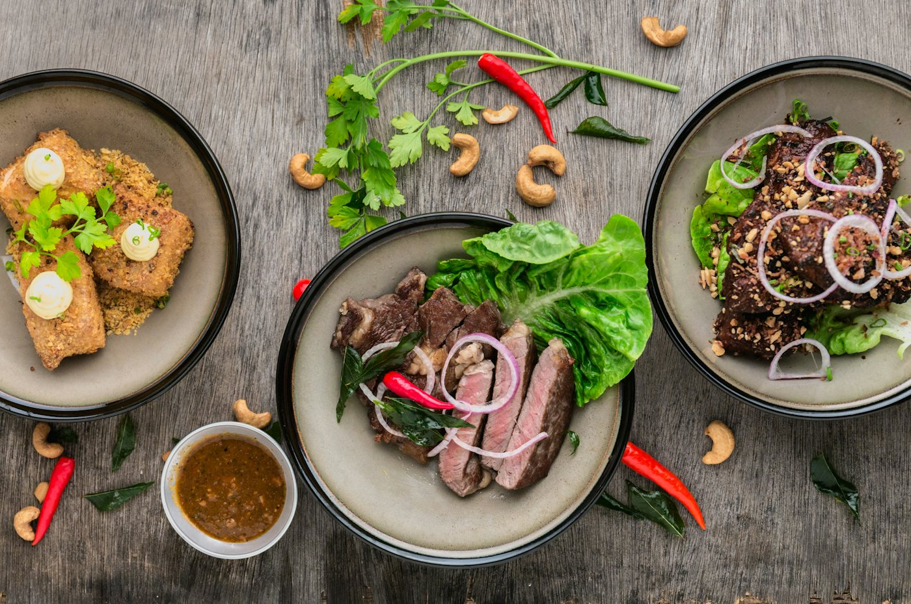

Almoço
De terça a domingo, com pratos do dia e menu executivo nos dias úteis.
Bela Vista, São Paulo · Desde 1974
Ingredientes de pequenos produtores, pratos para dividir e uma carta de vinhos curta, escolhida garrafa por garrafa.
Reservar mesa
De terça a domingo, com pratos do dia e menu executivo nos dias úteis.
Cardápio completo, carta de vinhos e sobremesas feitas na casa.
Aniversários, confraternizações e jantares de empresa em salão reservado.
Massas frescas, molhos e sobremesas para levar, com um dia de antecedência.
Massa fresca, molho de panela e mesa farta
Informe o dia, o horário e o número de pessoas pelo WhatsApp.
Respondemos em poucos minutos e seguramos a mesa por quinze minutos.
Aniversário, cadeirinha, restrições alimentares: deixamos tudo pronto.
Manobrista na porta e a mesa esperando por você.

50anos de casa
O ragu segue a receita escrita a lápis num caderno de 1974.
120lugares no salão
Salão principal, varanda e uma sala reservada para até quarenta pessoas.
3gerações na cozinha
Os netos da fundadora cuidam hoje da cozinha e do salão.

Terceira geração da família. Formada em gastronomia em Bolonha, voltou para assumir a cozinha em 2015.

Cuida do atendimento e da carta de vinhos, que troca a cada estação.
Respondemos em poucos minutos. Para grupos acima de dez pessoas, fale com a gente com dois dias de antecedência.